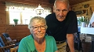

Lars-Åke Hedlund
Kontorist i Avesta.
| Född: | 1933-11-04 Avesta fs, Avesta stad. [1] |
|---|
| Vigsel: | 1959-04-11 Avesta, Avesta fs, Avesta kn. [2] |
|---|
| Levde: | 1975 Odeng. 12 B, Avesta fs, Avesta kn. [3] |
|---|
Personhistoria
| Årtal | Ålder | Händelse |
|---|
| 1933 |
|
Födelse 1933-11-04 Avesta fs, Avesta stad [1] |
| 1934 |
6 mån |
Makan Ingrid Viola Eriksson föds 1934-05-09 Bollnäs, Bollnäs fs, Bollnäs sn [1] |
| 1959 |
25 år |
Vigsel Ingrid Viola Eriksson 1959-04-11 Avesta, Avesta fs, Avesta kn [2] |
| 1960 |
26 år |
Dottern Ingrid Marie Hedlund föds 1960-07-07 Avesta, Avesta fs, Avesta kn [2] |
| 1965 |
31 år |
Dottern Eva Helena Hedlund föds 1965-03-27 Avesta, Avesta fs, Avesta kn [3] |
| 1975 |
|
Levde Ingrid Viola Eriksson 1975 Odeng. 12 B, Avesta fs, Avesta kn [3] |
Källor
| [1] | Mtl Sveriges befolkning 1950 |
| |
| | |
| [2] | Mtl Sveriges befolkning 1960 |
| |
| | |
| [3] | Mtl Sveriges befolkning 1975 |
| |
|
|  |
2018-08-13. Stolta morföräldrar i stugan där Armand Duplantis brukade tillbringa sina somrar.
Foto: Gunilla Wikström, SVT
|
|
{kind=link}